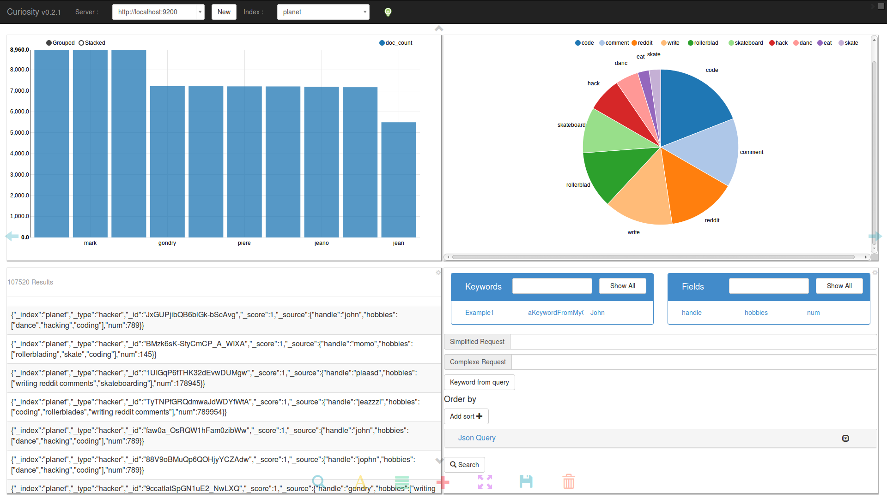

Curiosity
Curiosity is a tool developed by
Pages Jaunes,
that makes elasticsearch data exploration easy for an end-user. It provides a totally customizable search experience for everyone, with technical skills or not.
It's fully Open Source (MIT License), developped in javascript with AngularJS.
Main Features
- Keywords : highlevel keywords definition allows to hide a complex elasticsearch query. Once created, they can be coordinated into logical expression, making it possible for an end-user to create its own query, without knowing anything about elasticsearch.
- Templates : all results may be customized by an HTML template that may includes javascript call. An expert may create a template for a given type of document list, and this template may then be used to display the result of a query. That allows to hide the "json-view" of a query result to an end-user.
- Agregations : all the elasticsearch agregation types are availables. It possible to define interactively its own agregation by choosing its type (terms, stats, ...) and the fields on with it will operate. Once done, it decorates the result page and allows to refine it interactively.
- Contexts : a search experience is defined by a server, an index to query, a query, some agregations and templating. All this context can be saved so as to make it available again.
- Exports : all the query results can be exported to a csv file.
- Workspaces : your screen can be divided in multiple workspaces that can be personalize and stored into your context.
Screenshot

Use cases
- Curiosity may be used by a "data owner" or a "data administrator", who wants an easy access to his data.
- It may be used to create highly customisable dashboards for end-users.
- End-users may use it to explore data, using pre-prepared highlevel keywords.
We identify two main actors in a nominal use case :
- A curiosity expert, who will be able to define keywords from an ElasticSearch simplified syntax, to create template for result rendering, to define agregations based on technical document fields. This user is able to create easily a complete and interactive Dashboard.
- A curiosity consumer, who will use a prepared dashboard, accessible by a context. He will be then able to interactively use the agregation result, so as to browse the index data. Moreover, he will be able to modify the prepared query, using the highlevel keywords, and thus customize himself its own search experience.
News
-
07/22/2014 : We release 0.2.1 versions, that brings workspaces, layout, and revisited context system.
-
The full documentation is comming.